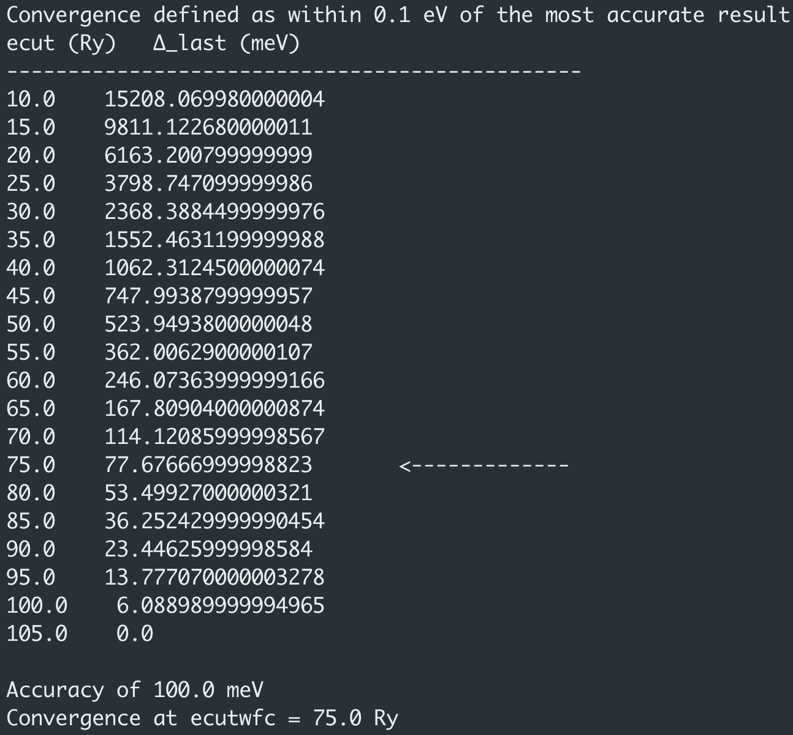
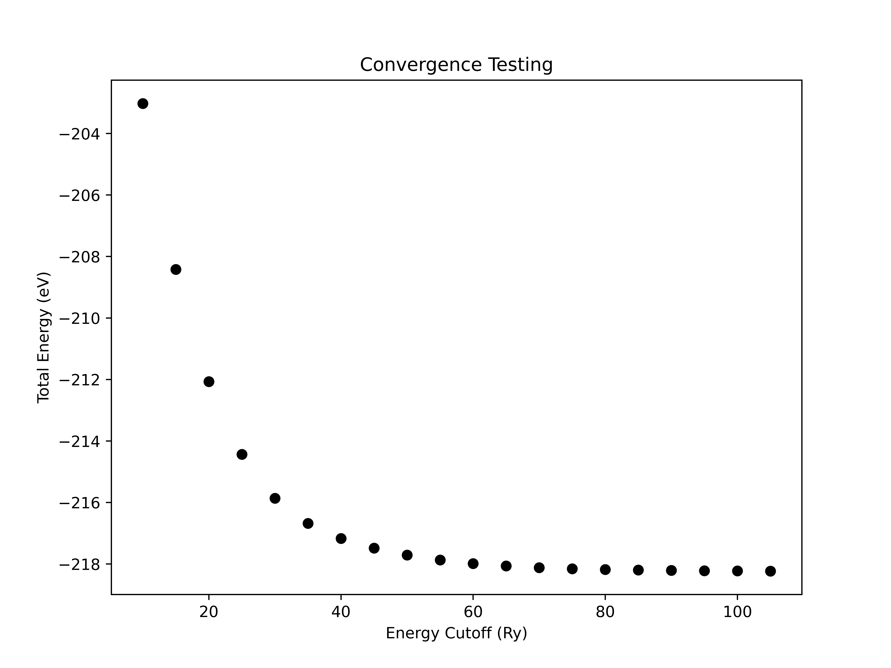
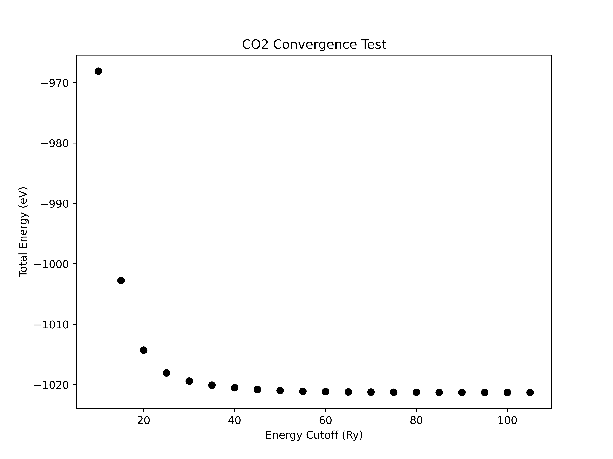
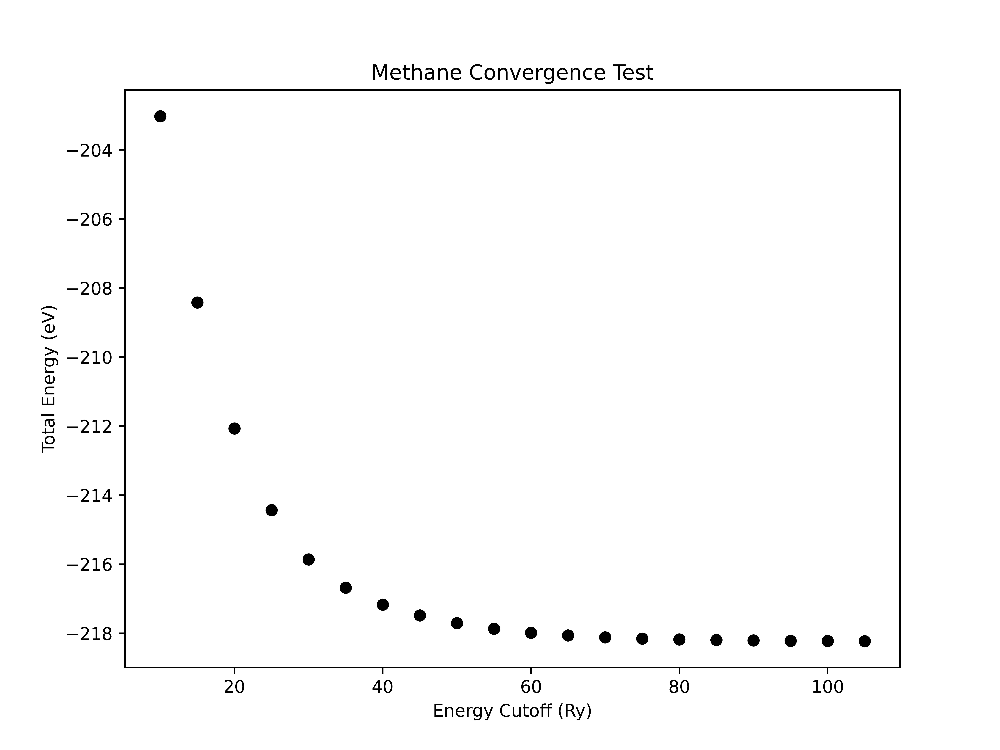
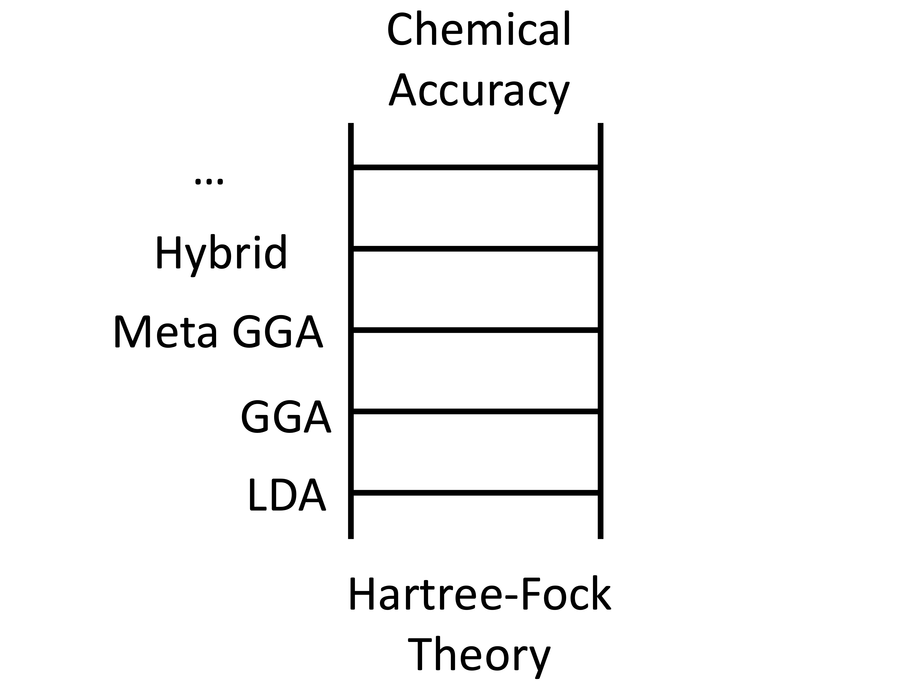
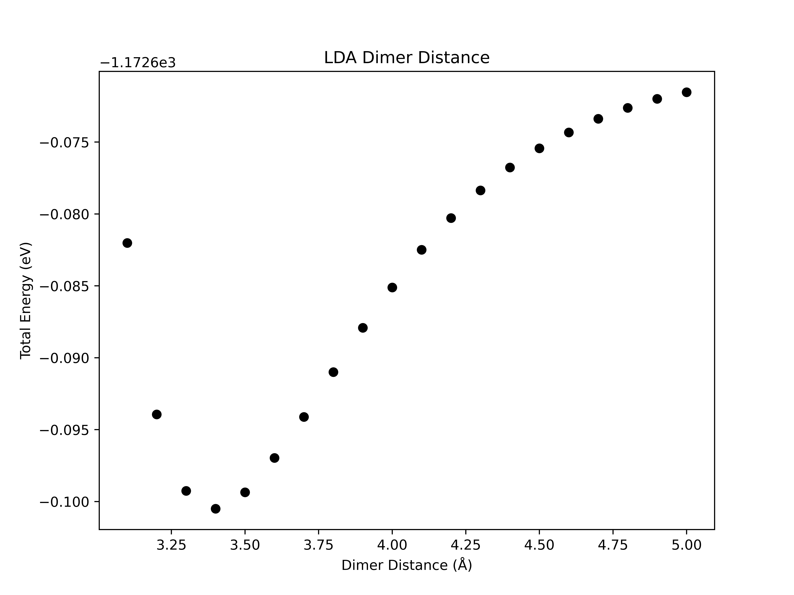
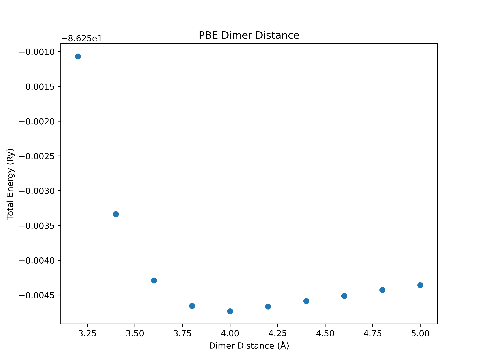
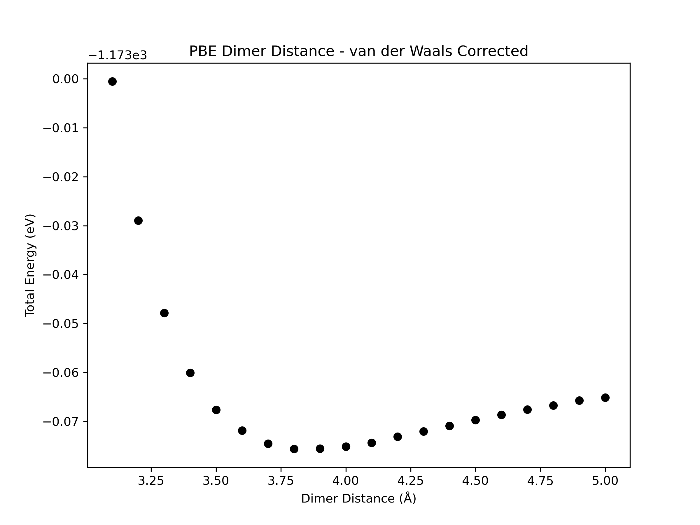

Convergence Tests
This week we are going to continue looking at isolated molecules. Specifically, we will be focusing on determining how well converged our results are. This is a necessary step to have any confidence in your results, and to make sure the result is meaningful. This should always be done before running calculations on new systems.
Before starting, if you can't remember how to do something from the command line, you can always refer back to Lab 1.
Pseudopotentials
As will be discussed in lectures, pseudopotentialsare used to approximate the core potential. This reduces the computational load significantly as we only need to do self-consistent calculations for the remaining valence electrons. For each atomic species in your calculations, we need a pseudopotential file describing the approximation you want the DFT code to use for that species.
To start this lab, copy the /opt/MSE404-MM/docs/labs/lab03 to your MSE404 directory.
Let's look at a brief view of an example of a CO2 input file.
Tip: In-code annotations
Click (1) to see notes on the input tags.
- This is an annotation
1 2 3 4 5 6 7 8 9 10 11 12 13 14 15 16 17 18 19 20 21 22 23 24 25 | |
- We have specified to look for the pseudopotentials in the current directory
- The pseudopotential we want to use to describe the core of Carbon
- The pseudopotential we want to use to describe the core of Oxygen
Tip: Pseudopotential Directory
It is useful to have a directory that stores all of your pseudopotentials as to not make many copies in our working directories. We can make a central pseudopotential directory and alter pseudo_dir to the correct file path (1).
- Specified by
pseudo_dir = 'path/to/pseudo/directory'
Open the input file for CO2 stored in 01_carbon_dioxide/CO2.in.
As we can see, we have told the DFT code to look in the directory ../../pseudo. If we do ls ../.. we should see that directory. If not, follow the tutorial to copy over the pseudopotential files from Lab 2.
The header of pseudopotential files contain valuable information about how the pseudopotential was generated, such as what states are included, and what approximations are used for exchange and correlation.
Task 1 - Pseudopotential File
Run the input file for CO2. Take a look at the pseudopotential file we are using for Oxygen:
-
What level of approximation are we using e.g. Local Density Approximation (LDA), PBE, etc..? Hint: This is usually stored at the top of pseudopotential files.
Answer
LDA. This is found at the top of the pseudopotential file:
1Info: O LDA 2s2 2p4 RRKJ3 US -
What were the 'core' and 'valence' states used to generate the pseudopotential file??
Answer
The states listed in the PP file are the valence states, and thus these are:
The core states are therefore 1S.1 2 3
nl pn l occ Rcut Rcut US E pseuo 2S 0 0 2.00 0.00000000000 0.00000000000 0.00000000000 2P 0 1 2.00 0.00000000000 0.00000000000 0.00000000000 -
What is the valence charge on the oxygen after the core has been approximated?
Answer
The valence charge is 4. Found by identifying the line
4.00000000000 Z valencein the information below:1 2 3 4 5 6 7 8 9 10 11 12 13 14 15 16
<PP_HEADER> 0 Version Number C Element NC Norm - Conserving pseudopotential F Nonlinear Core Correction SLA PZ NOGX NOGC PZ Exchange-Correlation functional 4.00000000000 Z valence 0.00000000000 Total energy 0.0000000 0.0000000 Suggested cutoff for wfc and rho 0 Max angular momentum component 269 Number of points in mesh 2 1 Number of Wavefunctions, Number of Projectors Wavefunctions nl l occ 2S 0 2.00 2P 1 2.00 </PP_HEADER>
Plane-wave energy cut-off
Regardless of the type of system you're looking at, you'll need to check how well converged your result is (whatever it is your calculating) with respect to the plane-wave energy cut-off. This governs how many plane-waves are used in the expansion of the Kohn-Sham states (and thus how many are being calculated).
Let's again look at our CO2 input file:
1 2 3 4 5 6 7 8 9 10 11 12 13 14 15 16 17 18 19 20 21 22 23 24 25 | |
- Plane-wave energy cutoff (Ry)
Note that:
-
Different systems converge differently. You souldn't expect diamond and silicon to be converged to the same accuracy with the same energy cutoff despite having the same structure and same number of valence electrons.
-
Different pseudopotentials for the same atomic species will also converge differently. Often pseudopotential files will suggest an energy cutoff as mentioned previously.
-
Different calculated parameters will converge differently.
- If we want to calculate the lattice parameter of a material, don't expect it to be converged to the same accuracy as another parameter e.g. the bulk modulus.
Warning
You should be particularly careful when calculating parameters that depend on volume, as the number of plane-waves for a given energy cut-off is directly proportional to the volume so this can introduce an additional variation. We'll see more about this later.
An example demonstrating the total energy convergence with respect to energy cutoff is shown in the 02_ecut/01_carbon_dioxide directory.
We have already set up a series of input files which are all identical except we systematically increase only the value of ecutwfc.
Examining CO2_25.in we see some new parameters that should be explained.
1 2 3 4 5 6 7 8 9 10 11 12 13 14 15 16 17 18 19 20 21 22 23 24 25 26 27 | |
- Central pseudopotential direcotry.
- This supresses the generation of the wavefunction file and the folder with the charge density. At this point, we don't need to worry about these and it saves disk space :).
- Plane-wave cutoff of 25 Ry.
- This variable controls when the self consistency cycle finishes. When the
estimated energy error < conv_thrthe self consistency cycle (scf) stops. You should be aware of this variable, as there is little point in trying to converge to greater accuracy than we are converging self-consistently.
Tip: Running Quantum Espressso
Make sure to have loaded the quantum espresso module and its dependencies using the command:
module load quantum-espresso
might need to change this depending on what the module is called.
Now we want to run pw.x for each of these input files. It would be very tedious to do this manually, especially if we had more input files. This is where bash scripting comes in handy. We won't go too much into bash scripting, but if you are interested you are encouraged to spend some time understanding the bash scripts provided. Let's examine the simple script below:
1 2 3 4 5 6 7 | |
- For loop going from i=10 to i=40 in steps of 5.
- Runs the command
pw.x < CO2_$i.in > CO2_$i.outfrom i=10 to i=40.
We shouldn't need to do much to these scripts, apart from changing the loop index. However, feel free to play around with them as you get better with the linux command line!
To run the bash file, we use the command ./run.sh. After some time, the output files should be in your directory.
Task 2 - Running Convergence Tests
Run the bash file using the command ./run.sh. After some time, examine the output files in your directory.
-
Check the output file
CO2_10.out. What is the converged total energy?Answer
! total energy = -71.18353288 Ry -
Check the output file
CO2_20.out. What is the converged total energy? Is this lower thanCO2_10.out?Answer
! total energy = -74.57951430 Ry. This is lower than the total energy inCO2_10.out.
As you should see, the total energy decreases as we increase the plane-wave energy cutoff ecutwfc.
We could go through each of these input files and look for the final energy. However, this would be tedious and time consuming. We have provided another bash script run_with_data_collect.sh that collects the results for you and deposits them into a file called data.txt.
A quick look at the bash file:
1 2 3 4 5 6 7 8 9 10 11 12 13 14 15 16 17 18 19 20 21 22 | |
- This line uses
awk. Awk is a programming language that is designed for processing text-based data. We don't use most of its functionalities here. All we are using it for is printing out a column of the output of the grep command. Additionally, it uses tr -d which is a method of removing puncuation to keep the script from breaking if punctuation is included where it shouldn't be. - The line with the converged total energy on starts with a '!', allowing for easy access using
grep.
Task 3 - Running Convergence Tests
Run the next bash file using the command ./run_with_data_collect.sh. After some time the bash file will have run. Examine the file data.txt.
-
What is the structure of the data.txt file?
Answer
The first column is ecutwfc (Ry) and the second column is Total Energy (eV)
Through this course you will need to do many convergence tests. You have been provided with scripts that generate the input files for you, as well as helping to plot your results. In the direcory for methane, 02_ecut/02_methane, we will go through how to use these scripts.
The first script we will use is named file_build.py. This is a python file that will generate all of our input files. Let's examine it:
1 2 3 4 5 6 7 8 9 10 11 12 13 14 15 16 17 18 19 20 21 22 23 24 25 26 27 28 29 30 31 32 33 34 35 36 37 | |
- Number of files you want to create. This can control the maximum cutoff that you are testing.
- A blank template. Here you will paste the contents of your desired input file, but with
ecutwfc = {}. Make sure to leave a space either side of the = sign here. If this is unclear, check the file file_builder_model.py. - Incrementing the cutoff from 10 Ry to the desired amount. Can also alter this for larger spacings.
- Output files will be named scf.mol.001.in, scf.mol.002.in etc.
To run this file you will need to edit it and paste the input file that you want to generate multiple instances of. In our case, that is the information stored in CH4_base.in. The only thing we need to replace is ecutwfc = xxxx with ecutwfc = {}. If you are struggling with this, take a look at the file file_build_model.py for how the file should look. After this issue the command:
1 | |
You should now have many input files generated. Examine them to make sure everything has been generated correctly.
Next, examine the run.sh file:
1 2 3 4 5 6 7 8 9 10 11 12 13 14 15 16 17 18 19 20 21 | |
- Looping from 001 to 010 in steps of 001.
- Runs pw.x for the files scf.mol.001.in, scf.mol.002.in etc.
- Looping again from 001 to 010 in steps of 001.
Task 4 - Running Convergence Tests With Scripts
In file_build.py change num_files to 20. In run.sh change the for loop to go from 001 to 020. Generate the input files as described above. Run the bash file as before, using the command ./run.sh. After some time the bash file will have run. Examine the file data.txt.
-
At what plane-wave cutoff is the total energy converged to within 0.1 eV of your most accurate run?
Result
ecutwfc = 75 Ry.
\(E_{T}^{\text{best}} = -218.233323168 \,\text{eV}\)
\(E_{T}^{75} = -218.15564649599997 \,\text{eV}\)
\(E_{T}^{\text{diff}} = -0.07767667200002393 \,\text{eV}\)
Again, this is quite tedious to find by hand. You have been provided with another script convergence_processing.py which analyses the results stored in data.txt and shows where the calculation has converged to within a specified tolerance.
Let's take a quick look at this script:
1 2 3 4 5 6 7 8 9 10 11 12 13 14 15 16 17 18 19 20 21 22 23 24 25 26 27 28 29 30 31 32 33 34 35 36 37 38 39 40 41 42 | |
- Name of file that we have our data stored in.
- Loading in the contents of the file.
- Defining our convergence threshold. This value is in eV. Here, we define convergence as within 10 meV of our most accurate calculation.
Task 5 - Running Convergence Tests With Scripts
Alter the convergence threshold in convergence_processing.py to be 0.1 eV and run the convergence script with the command:
python3 convergence_processing.py
-
What is output on your terminal? What plane-wave cutoff gives us a result converged to within 0.1 eV of the most accurate calculation?
Result
ecutwfc = 75 Ry.

System Size Considerations
Actually, we typically converge the total energy per atom (meV/atom). This is due to the scaling of the total energy with system size (number of atoms).
If we have more atoms in our system, the magnitude of the total energy will naturally be larger i.e. the total energy scales with system size. However, the total energy per atom is a normalised quantity, providing a measure of the total energy that is independent of system size, and thus can be compared between systems to make sure you are converged to the same accuracy.
General Scripts
The scripts you have been provided in 02_ecut/02_methane are quite general. You can use them through the course. There are more like these in the /opt/MSE404-MM/docs/labs/useful_scripts directory.
Plotting
Python
Most of the plotting in this course can be done with Python. Scripts will be provided for you, but you are encouraged to play around with them to fit your needs if you want to test things out.
You will have noticed that at the end of the convergence_processing.py there is more python code. This uses matplotlib to plot the results stored in data.txt to visualise the convergence as ecutwfc is increased.
Later on in the course you will have python scripts to plot band structures and density of states.
For now, we will have a brief overview of the final few lines of convergence_processing.py.
1 2 3 4 5 6 7 8 9 10 11 12 13 14 15 16 17 18 19 20 21 22 23 24 25 26 27 28 29 30 31 32 33 34 35 36 37 38 39 40 41 42 43 44 45 46 47 48 49 50 51 52 | |
- Initialising the size of our figure. Changing these will change the aspect ratio of the plot.
- Scatter plot of ecut vs etot.
- After giving python all of the plotting information, we tell it to plot.
Task 6 - Convergence Plot
Uncomment the final few lines of the convergence_processing.py and run it again.
- What do you expect the plot to look like?
Result

Task 7 - Convergence of CO2 vs Methane
We have now done a convergence test using the scripts file_builder.py and convergence_processing.py for methane. Copy convergence_processing.py and file_build.py to 02_ecut/01/carbon_dioxide. Redo the convergence for CO2 using the convergence scripts as we did above using the script run_02.sh. Before running anything, make sure to remove the data.txt that is already in this directory from our previous calculation.
- Which molecule has the lower plane-wave cutoff?
Answer
After running convergence_processing.py we can see that:
\(E_{\text{cut}}^{\text{CO2}} = 65 \,\text{Ry}\)
\(E_{\text{cut}}^{\text{Methane}} = 75 \,\text{Ry}\)
CO2 Has the lower plane-wave energy cutoff.
- What do the convergence plots look like?
Result
 
- Is this a fair comparison?
Answer
No. If we want to compare the two we should have convegred the total energy per atom.
Exchange & Correlation Functional
How we approximate the exchange and correlation between elections is a key part of DFT. The functional that we use determines how we approximate these many-body interactions.
By default, Quantum Espresso reads what exchange correlation functional to use from the header of the pseudopotential file, as we saw earlier in Task 1.
It is possible to override this by using the input_dft variable in the &system section.
Mixing Approximations
It is generally not a good idea to mix approximations. It is best to use the same approximation for the exchange correlation functional as was used to construct the pseudopotential.
As you might expect, the exchange correlation functional chosen can have a big impact on a number of parameters. When we change the exchange correlation functional, we are changing the level of theory our calculations are running at.
Levels of approximation
- Lowest level of approximation is the local density approximation (LDA)
- Next highest level of approximation is the generalised gradient approximation (GGA)
- More complicated functionals like 'meta-GGA', 'hybrid' etc.
This is usually depicted in 'Jacob's ladder' of approximations, where the higher on the ladder you are, the more accurate the more accurate the description of exchange and correlation between the electrons are.

In 03_argon we are going to investigate the change in the binding energy as we vary the bond length between an argon dimer using two different levels of theory.
Task 8 - Argon Dimer
Examine and run the scripts file_builder.py and run.sh in 03_argon/01_lda.
- What level theory is this at?
Answer
This is at the local density approximation (lda) level.
- What are these script doing?
Answer
The script is generating multiple input files of varying bond length for the argon dimer and running a total energy calculation on them. The end of run.sh is collecting the relevant data for us and outputting it into a file called data.txt.
Now examine and run the script analysis.py.
- What is this script doing?
Answer
The script is looking through data.txt and finding the lowest energy. This is the 'optimal' distance between the two argon atoms.
- At what distance does the argon dimer have the lowest energy?
Result
a = 3.4 Å gives the minimum energy of -1172.70049957 eV

Do the same for 03_argon/02_pbe. This is at the GGA level, specifically using the pbe functional.
- At what distance does the argon dimer have the lowest energy?
Result
a = 4.0 Å gives the minimum energy of -1173.066229 eV
However, the minimum is not very well defined.

This is a known problem in DFT. LDA tends to 'overbind' and PBE tends to 'underbind'. In dimer situations like this Argon dimer, one may think van der Waals interactions are something important to consider. In fact, in this case it is very important. Van der Waals can be taken into account in different ways - an additional term added to the total energy or directly through the exchange-correlation potential.
Navigate to 03_vdw.
-
Run
file_build.py. Examine the input files. You will see a tagvdw_corr = 'grimme-d3'. This means that we are going to include van der Waals corrections (via a total energy correction term). -
At what distance does the argon dimer have the lowest energy?
Result
a = 3.8 Å gives the minimum energy of -1173.07559029 eV

More Convergence Parameters
In this lab we have been dealing with isolated molecules. Quantum Espresso is a plane-wave DFT code, and thus deals with periodic unit cells. To model 'isolated' atoms, we make the unit cell very large compared to the size of the isolated molecule, effectively reducing any interaction with neighbouring periodic images. However, this is a parameter we should converge. A larger unit cell (volume) increases the computational cost, as the number of plane waves sales with the unit cell volume, so we don't want the unit cell too large. We should also have converged the total enegry versus the unit cell size.
Additionally, if we are dealing with crystals which are periodic, then we need to sample the Briouillin zone with 'k points'. This will be covered in Lab 4. The number of k points used to sample the Briouillin zone should also be converged when dealing with periodic crystals.
Summary
In this lab we looked at defining pseudopotentials, checking the convergence of the total energy with respect to the plane-wave energy cutoff, and the effect of exchange and correlation functional.
- Convergence of any parameter is done by systematically varying the corresponding calculation parameter and looking at how the result changes.
We saw how we can use python and bash scripts to automate this process.
- We can use python scripts to generate multiple input files with systematically varied parameters.
- We can use a bash
forloop to perform a calculation for a number of input files. - We can use
greporawkto parse results or parameters from our output files. - We can quickly generate a plot of a data file with pythons matplotlib.